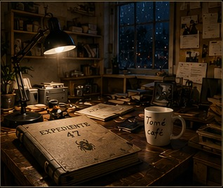

El expediente que nunca debió llegar a vosotros
Encontráis un sobre bajo la puerta. No tiene remitente. Dentro hay una fotografía, una llave con el número 47 y una nota.
«Si estáis leyendo esto, ya es demasiado tarde para mí.
La policía cerró el caso Vega hace seis meses. Dicen que fue un robo. Mienten.
Hay cuatro personas que saben qué ocurrió. Una de ellas está mintiendo. Y alguien ha hecho todo lo posible para que la prueba desaparezca.
No confiéis en la versión oficial.
— A.
J.F. / I.M.
JFB
«Te quiero igual»
«Tomé café»
Archivo fotográfico
El expediente se completa a medida que descubrís pruebas. Nada aparece aquí antes de ser recuperado.
La fotografía de Álex
El informe afirma que el reloj fue encontrado detenido a las 20:51. La fotografía demuestra otra cosa.

20:51 — Álex compra café.
21:03 — entra en el edificio.
21:17 — vecino escucha un golpe.
El reloj no parece detenido a las 20:51.
Cuaderno alfanumérico
Cuaderno personal de Álex. Contiene páginas numeradas, algunas arrancadas.
La única hora que podéis leer directamente en la fotografía es 21:17. El cuaderno puede contener la forma de interpretarla.
Todos tienen algo que ocultar
Clara Vidal
Abogada de Álex. Asegura haber hablado con él a las 21:20.
Registro: no existe ninguna llamada a esa hora.
Bruno Salas
Periodista. Antiguo compañero de Álex.
En su ordenador: VEGA_47_FINAL.docx
Marta Ruiz
Vecina del edificio. Dice haber visto salir a un hombre a las 21:30.
Lleva un collar con un escarabajo dorado.
Diego León
Dueño del Café Mirador. Coartada: 21:10–22:00.
Matrícula de su coche: JFB.
| Registro | Hora | Dato |
|---|---|---|
| Entrada edificio | 21:03 | Álex entra |
| Última llamada | 20:42 | 17 segundos |
| Declaración Clara | 21:20 | «Hablé con Álex» |
| Recibo Café Mirador | 21:32 | 2 cafés + 1 agua |
¿Quién miente sobre haber hablado con Álex?
La fecha que se repite
Los cuatro recortes pertenecen al mismo archivo. Solo uno está fechado exactamente el mismo día que aparece en el sobre inicial.
22/03/24 · EL DIARIO
Empresario hallado muerto en extrañas circunstancias.
Acceso previo a información policial.
15/05/24 · LA VOZ
Robo de documentos confidenciales en el puerto.
Sin forzar cerraduras.
23/07/24 · LA TRIBUNA
Desaparición del periodista Álex Vega.
Expediente 47.
02/09/24 · EL NORTE
Nuevo caso de filtración de información policial.
Fuente anónima.
J.F. / I.M.
El sobre ya os dio la fecha. Aquí solo tenéis que localizar el recorte que coincide exactamente con ella.
¿Qué fecha coincide con la del expediente?
Donde terminan las vías
La grabadora recuperada contiene una frase:
«Buscad el lugar donde la ciudad termina pero las vías continúan. Norte. 17. Azul.»
Buscad el punto que está al norte y que coincide con el lugar donde continúan las vías: Almacenes del Norte.
La canción en el recibo
En el Café Mirador aparece un recibo con una anotación:
2 cafés · 1 agua · 1 llamada desde cabina
TOMÉ CAFÉ
JFB · 23/07/24 · 21:32
Junto al recibo hay una frase de Álex:
La transcripción de la llamada dice:
La otra pista permanece oculta mientras incluso cuando nadie mira repetidamente.
Usad JFB como posiciones del alfabeto (J=10, F=6, B=2) y tomad la primera letra de esas palabras de la transcripción.
10ª = R · 6ª = I · 2ª = O
La llave abre algo más que una puerta
La caja tiene tres ruedas. La nota dice:
SEGUNDA RUEDA: el número que aparece donde nadie mira.
TERCERA RUEDA: la persona que lleva el símbolo.
Ya conocéis:
- 23/07/24 → 23
- 17 → el número escondido en la escena
- escarabajo dorado → Marta
Convertid MARTA a números con A=1 y sumad: 13+1+18+20+1 = 53. Después reducid 5+3.
La persona que nunca desapareció
Dentro de la caja hay una carta.
«No busquéis a quien me hizo desaparecer.
Buscad a quien necesitaba que yo desapareciera.
La ventana, el reloj y la llamada fueron una mentira. La persona del escarabajo ayudó a construirla.
El hombre de la matrícula JFB no era el culpable. Y Clara mintió para protegerme.
El verdadero responsable tenía acceso a los expedientes antes de que fueran públicos.
Su firma aparece en todos los casos.
— Álex»
Revisad los documentos. El nombre que aparece como responsable oficial de los cuatro expedientes es:
Pero falta una última prueba. Introducid una de las dos frases personales que Álex dejó en el expediente inicial.